The Show
Static Age Radio
Static Age Radio Operated From May of 2024 through August of 2024. Static Age hit the airwaves every wednesday at 6:00 PM with its first show premiering on May 15th, 2024 and its finale airing on August 16th, 2024. This show was incredibly enriching and helped me in so many ways. From helping me create/maintain a schedule, to multitasking, to dealing with a radio format I hadn't before, this show helped shape both my physical and mental health in a positive way.
The Idea
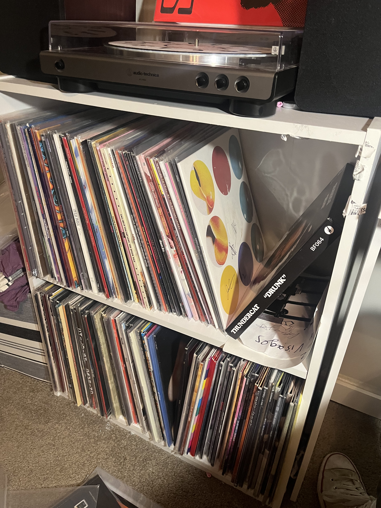
The idea for Static Age Radio came from a few places. First, there was the gradual growth of my record collection which I frequently updated (too much tbh). Second, there were a few friends in radio who used records either mostly or entirely on their show. And thirdly was the time constraint. This show was just going to last the summer so I didn't need to worry about whether I'd run out of usable records for it. With those three factors all circling my brain at once, I decided to commit fully to a fully analog show.
The Host
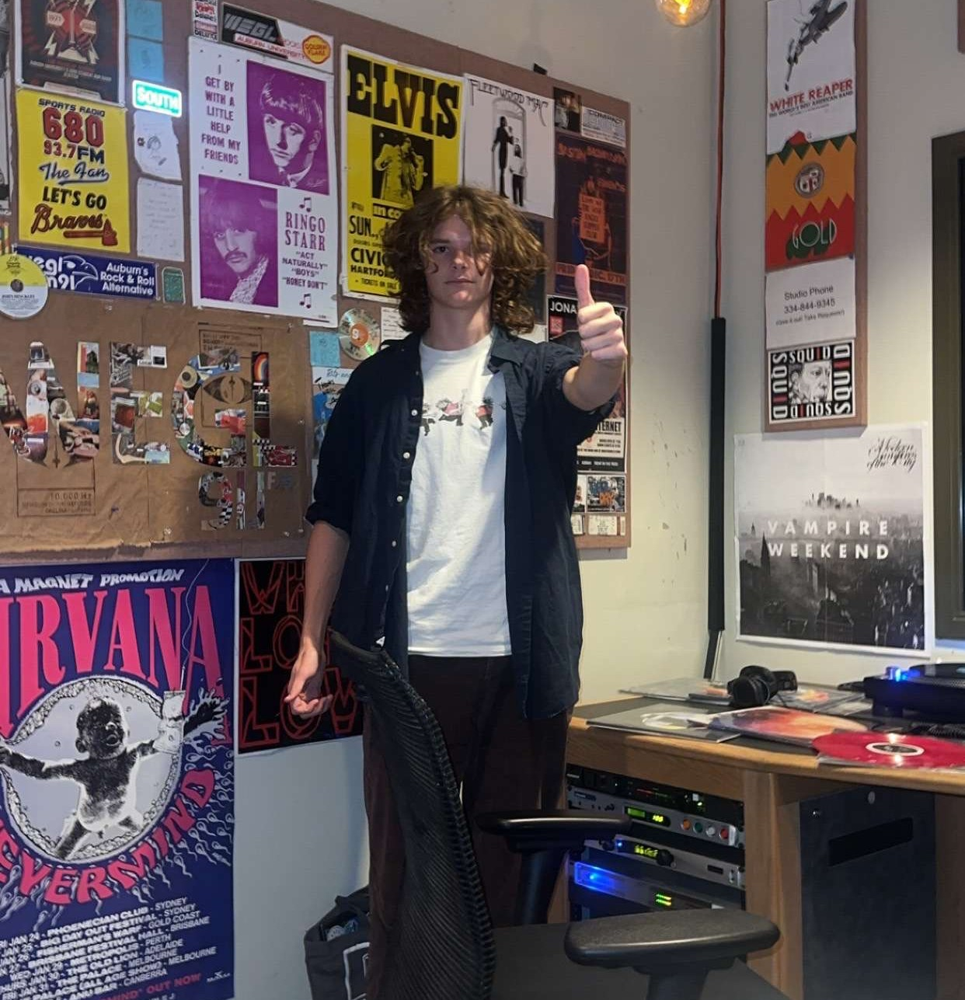
Static Age Radio was hosted by David Wheeler (me) although I featured a multitude of guests on certain episodes throughout its run. To me these shows are the ones I go back to the most often. Personally, there is such an infectious joy in hearing myself banter with my friends about music we like. If you're looking to check out any of the episodes, I'd recommend starting with any of the variety hour specials.
The Return
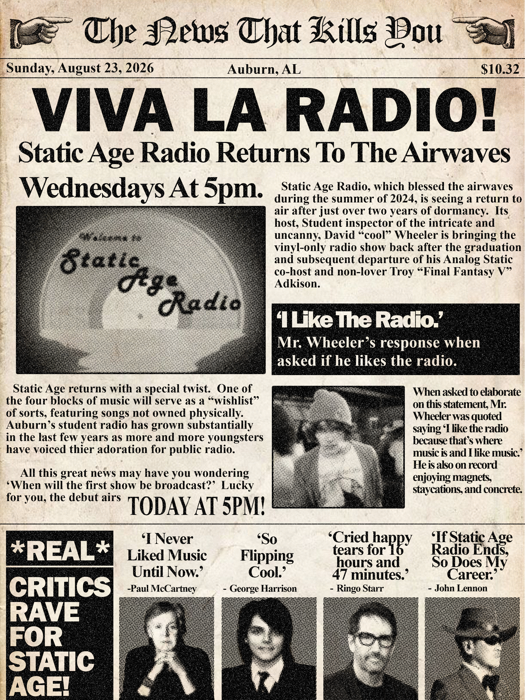
As of August of 2026, Static Age Radio had returned to the airwaves! Since I did not want to continue Analog Static in Troy's absence but still wanted to participate in radio, what better solution than to bring it all back? Static Age in 2026 follows a similar format, with a few solo shows and special variety episodes that feature friends who bring their own records. One small change is that the rule of physical-only is less strict. There is music I sometimes want to showcase or play that I do not own and it feels silly to buy a whole album to play a song on the radio, but the show is still MOSTLY physical media. It has already been quite fun having the show back and I cannot wait for the future of Static Age Radio. Catch Static Age Radio every Wednesday from 5pm to 6pm EST on wegl91.1fm or weglfm.com!
The Timeline
Week 1 (05/15/2024): Classic Rock & Technical Difficulties
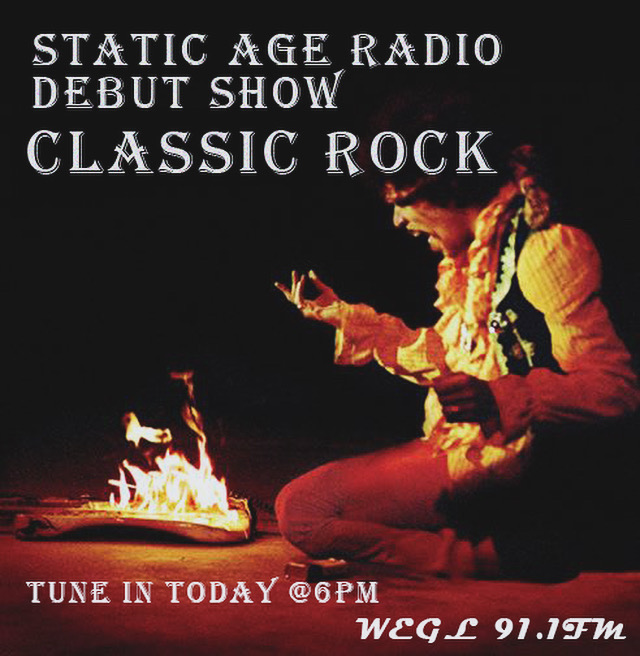
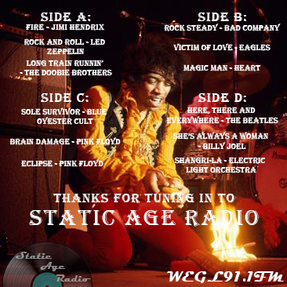
The first episode of Static Age Radio kicked off with some classic rock. Embracing this new analog format made this decision feel right along with the fact that Analog Static also began on a classic rock theme. The episode itself was a bit of a mess in all honesty. I had never really used the turntables before and was not prepared at all for the weird settings that the turntables were set to when I arrived. Many of the tracks in this first episode feature strange effects and pretty bad mixing because, again, I did not know what I was doing. The first song, Fire by Jimi Hendrix is genuinely comical when I try to play it. When it plays, its far too quiet and you can hear me fiddling around with the record player's settings basically just pressing stuff til it works. There's even a moment where the sound gets a bit better but not even a full 5 seconds later I mess it up and it goes quiet again. It proved to be an incredibly stressful and hectic show that caught me a little off guard but I ended up learning a great deal from just this first show. Regardless of the difficulties and stress, this debut still proved to be a fun show. What helped was having my friend Ty in the studio to provide company and moral support while the show progressed. Ty would be back two shows later for the first variety special.
Week 2 (05/22/2024): Soul, Funk, and R&B
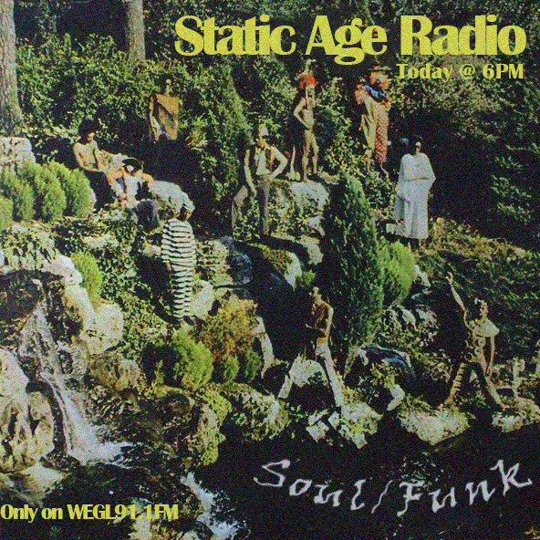
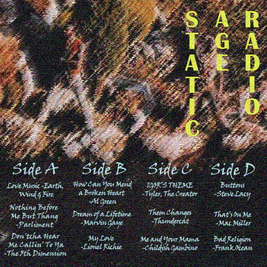
With the first episode tackling classic rock, I felt the second show should gradually ease into the modern age. My way of doing this was to play some older soul/funk in the first two blocks, and have the second two blocks contain newer soul/funk as well as some newer R&B. It was super fun mentally comparing these two halves of the show and how the trajectory of soul music has shifted and where it has remained consistent. Also fun fact about this week was I was short one song for the oldies and so I went to my local record store and purchased Let's Stay Together by Al Green, I hadn't actually heard it before (I know, I know) but knew it was a classic so I trusted I'd find something I enjoyed from it. Well, I went home and played it, and absolutely loved it. It was actually hard to pick a song from it because I enjoyed the whole album so much but ended up landing on the title track because, ya know, classic. Luckily I faced far fewer technical difficulties this time and was slowly acquainting myself more and more with the technology I was using. I still feel like my delivery in these first two shows was pretty awkward and stilted so its pretty obvious that I hadn't gotten completely comfortable with the format yet. Fortunately for me, this would change drastically in the next show.
Week 3 (05/29/2024): Variety Hour Special #1 With Liz H, Trey, & Ty
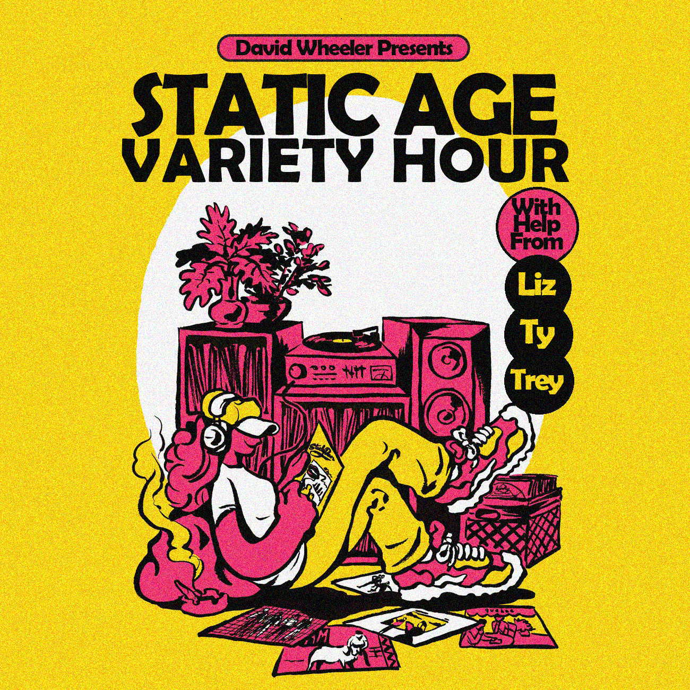
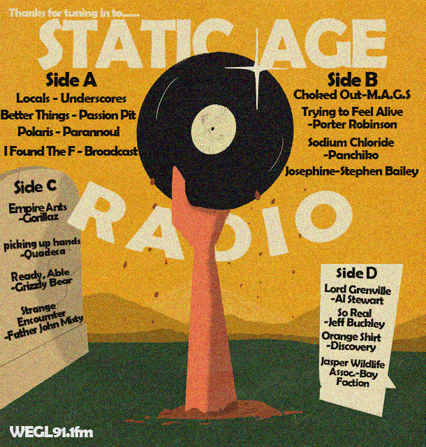
This was the first variety hour special of the show. Variety hour specials were an idea I had to, every few shows, have three friends on the show and have them each pick a few records to bring and showcase. Not only did this provide a really nice diversity to the catalog of music that was played, but it also gave me a much deeper insight into each person I brought on the show. It was so fun having each friend explain which records they picked and why they chose the specific song they did. Overall this was the first show where I had a really good time and felt relaxed/comfortable on air pretty much the whole time. This also proved to be a great learning experience too because two out of the three guests this episode had radio shows of their own and were more experienced than I was so it was neat picking up on mannerisms or habits they displayed while on air. I've mentioned before that my favorites of the shows I've recorded were the variety hour specials and this one set the tone for the future ones, having me planning/anticipating the next special from the moment this one ended. It's no secret that, on air, it took a while for me to find my footing when talking in between songs because I was so used to having a co-host. This resulted in a lot of my dialogue in solo shows coming across a little stilted and flat. But with this one, talking to all of my friends about all of the music we were playing felt so natural and seamless.
Week 4 (06/05/2024): Summer Music
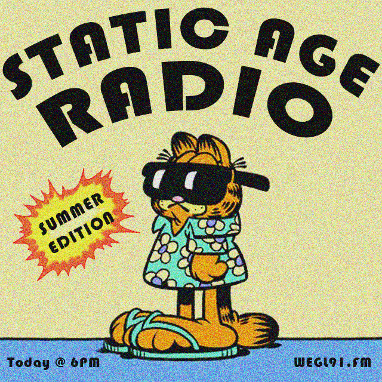
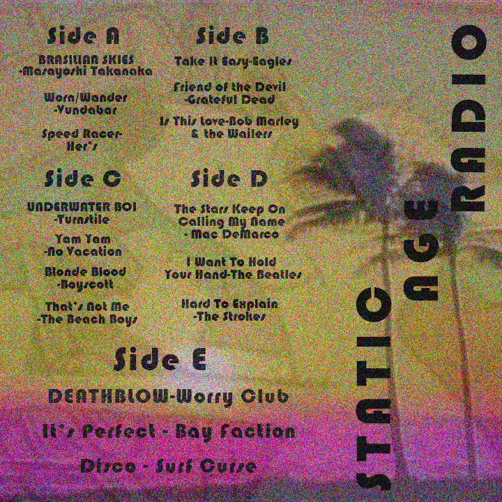
Although this week's show was my third show by myself, it felt like the first solo show where I was truly comfortable. I had less technical difficulties, less dead-air, better song transitions and commentary/banter. Overall I see this show as a kind of tru beginning in terms of comfortably putting on a radio show by myself. I have such a fondness and nostalgia already for this summer and so the music picks here resonate with me a lot to this day. Starting off with Brazilian Skies by Masayoshi Takanaka set a perfect mood for the rest of the show (even though I started recording late and so you can only catch the tail end of it, #sorry). The songs I feel like truly defined the summer from this show were probably 'Worn/Wander' by Vundabar, 'Blonde Blood' by Boyscott, 'Hard To Explain' by The Strokes, 'DEATHBLOW' by Worry Club, and 'It's Perfect' by Bay Faction. Don't get me wrong I love each and every song I played (hence why I own them) but I feel like the songs previously mentioned would go on to strongly define that summer for me in a big way and when I hear those specific songs I'm often reminded of that summer. Ending the show with 'Disco' by Surf Curse was perfect since those of you who know me well know how much that song means to me. But for those who don't, my first semester of college ended with a convert pitched by my new friend and future radio co-host Troy. Surf Curse was playing in Nashville on December 8th and that also happened to be the last day of finals week (and the day before my birthday). Before this I hadn't really entertained the idea of going to concerts so this was a big moment for me and would define one of my favorite pastimes to come. The concert was incredible and the band encored with 'Disco' which was such a fond reminder of me and Troy's friendship that it just made for an incredible show to close the beginning of what would become a very formative experience in college.
Week 5 (06/14/2024): Emo Music
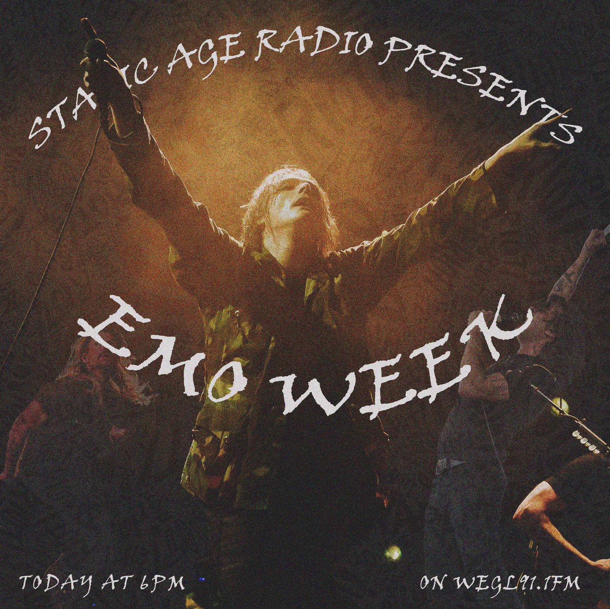
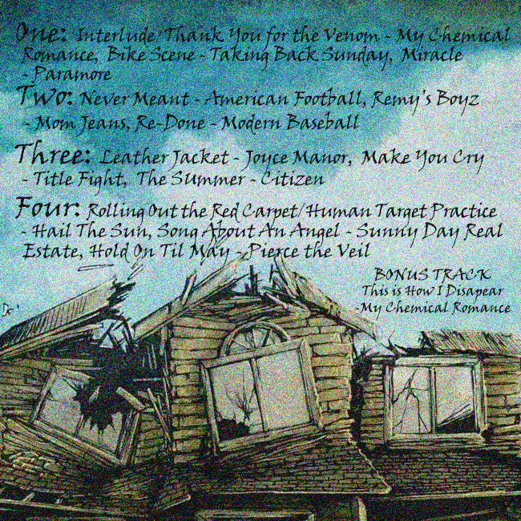
This week gave me an excuse to shove all of the delicious emo music I had been listening to down the ears of any listeners. Also this show was on a Friday because I had got my wisdom teeth removed earlier that week.I had enjoyed my fair share of emo before, got really into MCR in high school, but recently began expanding my knowledge of the genre and delving into subgenres. During the year preceding this summer I found bands like Taking Back Sunday, Sunny Day Real Estate, Joyce Manor, and Modern Baseball. Of course I threw in picks from bands I had already been familiar with like MCR, Citizen, and Title Fight. I really like the way I divided this show, with block 1 representing 3rd wave emo (emo pop) with MCR, Paramore, and Taking Back Sunday, block 2 represented midwest emo (old and new) with some American Football, Mom Jeans, and Modern Baseball. Block 3 consisted of the new alternative branch of emo/posthardcore witnessed in the 2010s with Joyce Manor, Citizen, and Title Fight, and block 4 was semi-disjointed, mainly focusing on metalcore/posthardcore with bands like Hail the Sun and Pierce the Veil, and then in between them for some reason was Sunny Day Real Estate. I guess I just hadn't delved too deep into 90s second wave emo abd had nowhere else to put it. And then I ended the show with a surprise song from MCR. I had both Three Cheers for Sweet Revenge and The Black Parade on vinyl and wanted to play something from both of them.
Week 5 (06/18/2024): Variety Hour #2 with Emily, Ryan, and Liz F.
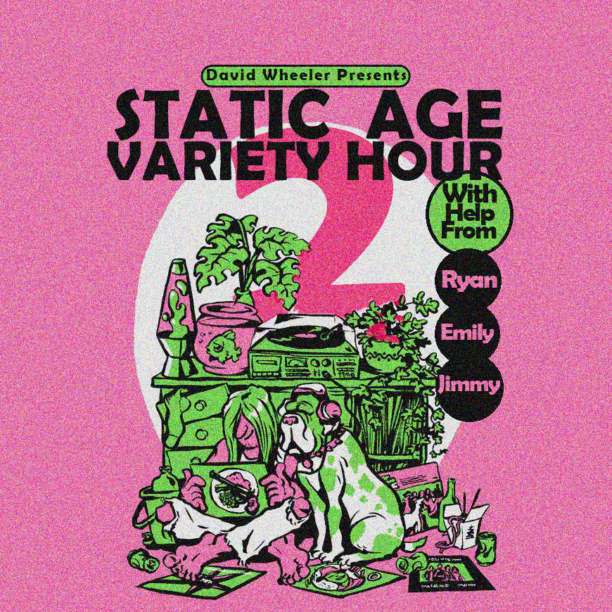
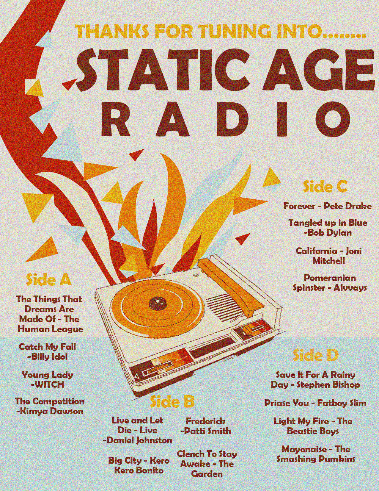
The second variety special was incredibly fun to host. And since I went on later in the day due to the closing of campus for Juneteenth, I had an extra hour for the show and so we got more time for banter and more song time. As with the last variety special, I loved this show and the chemistry between me and my friends on air. We played a wide variety of music which kept the show chaotic and fun. This show serves as a fun trip down memory lane for me and I cherish it just as I cherish all of the variety specials. This one definitely has a distinct presence though. As much as i tried to format blocks in a cohesive manner, a lot of the time the vibes were very quick to shift, which in retrospect I appreciate. Listening back I truly had no idea what to expect and that kept an air of excitement in me. My picks for this show consisted of 'Catch My Fall' by Billy Idol, 'Clench to Stay Awake' by the Garden, 'Tangled Up In Blue' by Bob Dylan, and 'Mayonnaise' by The Smashing Pumpkins. One of my favorite aspects of the variety episodes is that I get to learn about new music through the guests I bring on and that aspect showed itself most prominently in this show. I became aware of Pete Drake, Alvvays, The Human League, and Patti Smith Group. These acts I had heard of before but had never taken the time to listen to them myself and hearing my friends play their favorite songs from these artists on the air gave me the push I needed to dive deeper.
The Archive
Week 1: Classic Rock - 05/15/2024
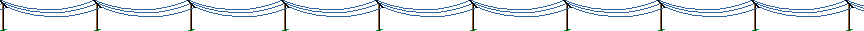
Week 2: Soul/Funk/R&B - 05/22/2024
Week 3: Variety Hour #1 With Trey, Liz H., and Ty - 05/29/2024
Week 4: Summer Music - 06/05/2024
Week 5: Emo Music - 06/14/2024
Week 6: Variety Hour # 2 with Emily, Ryan, and Liz F.(Was Jimmy) - 06/18/2024
Week 7: Jazz with Logan - 07/03/2024
Week 8: Sleepytime Music - 07/03/2024
Week 9: Country/Folk - 07/10/2024
Week 10: Variety Hour #3 - 07/17/2024
Week 11: LOUD MUSIC - 07/25/2024
Week 12: Soul-Crushing Music - 07/31/2024
Week 13: Variety Hour #4 With Chloe, Caroline, & Liz S. - 08/07/2024
This show was not recorded. #lostmedia
Week 14: Static Age Radio Finale with Troy, Evan, & Wyatt - 08/14/2024
This show was not recorded. #lostmedia